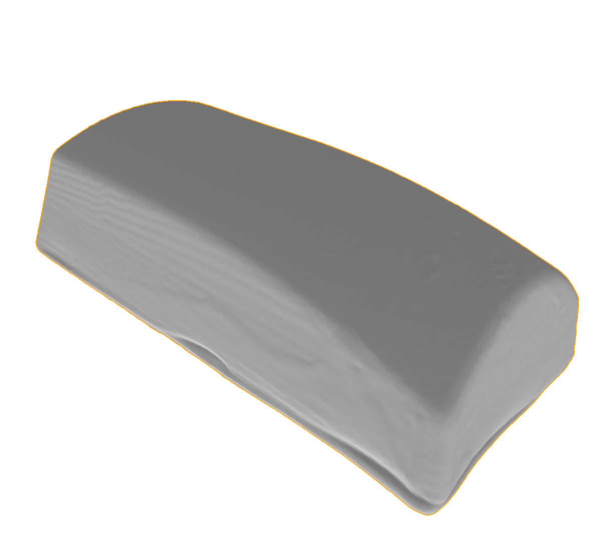
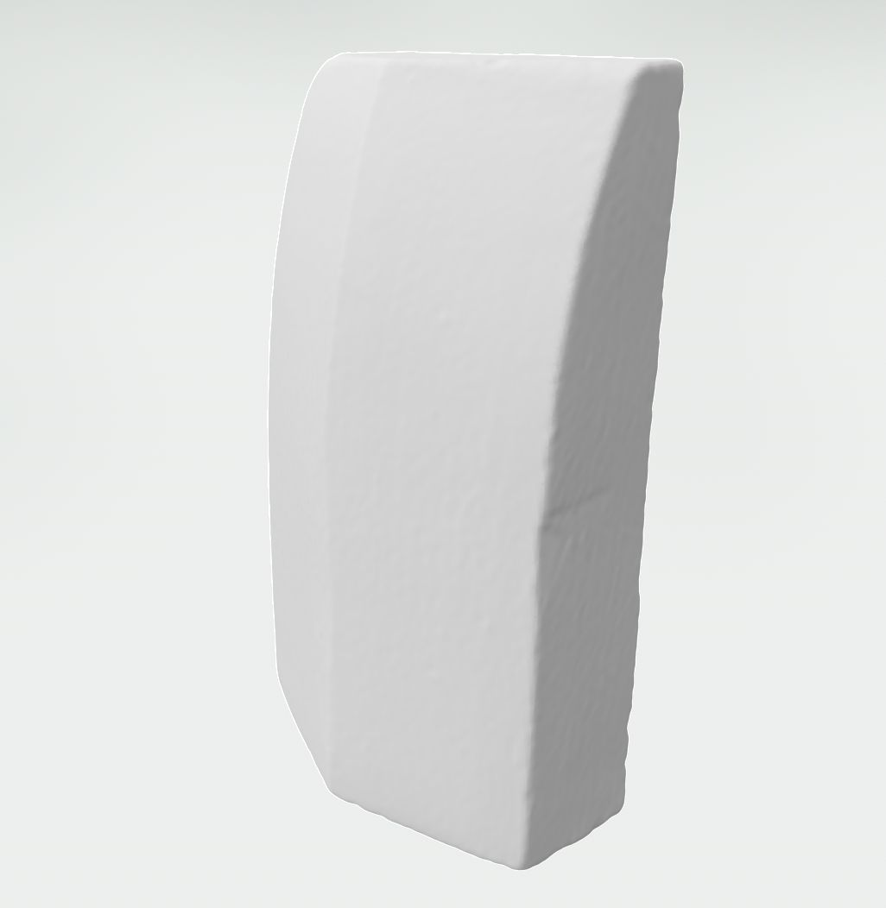
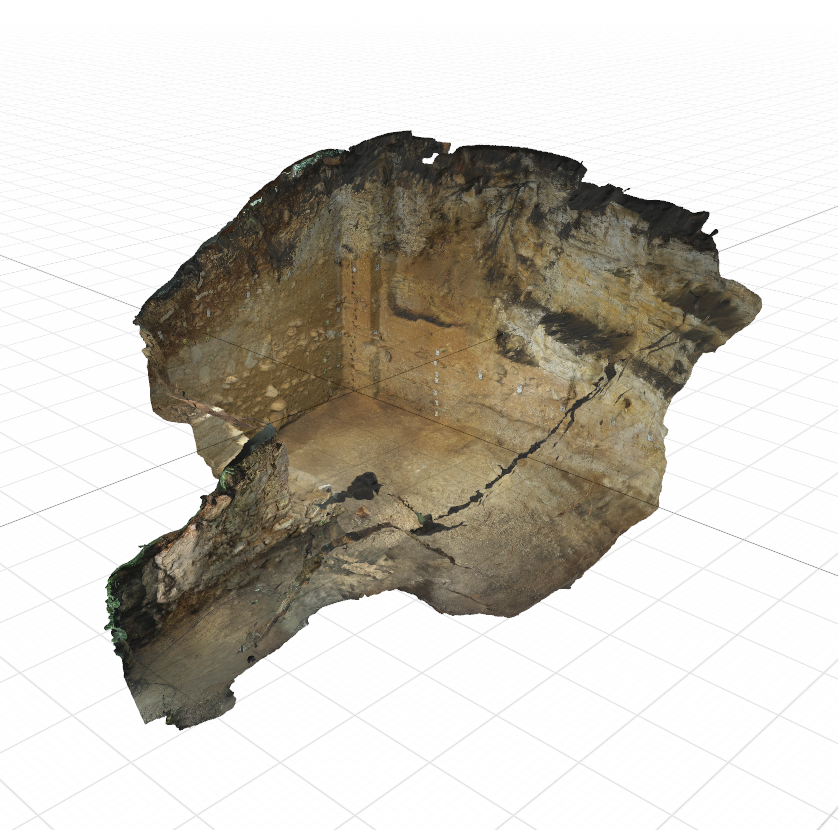
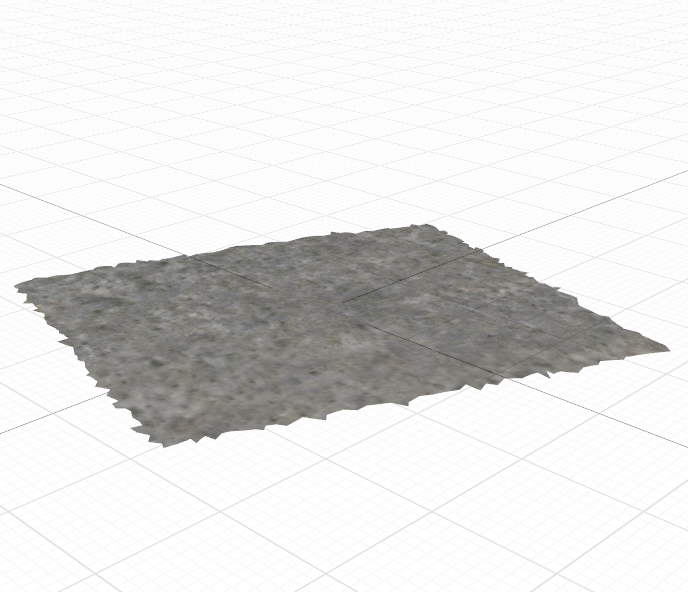
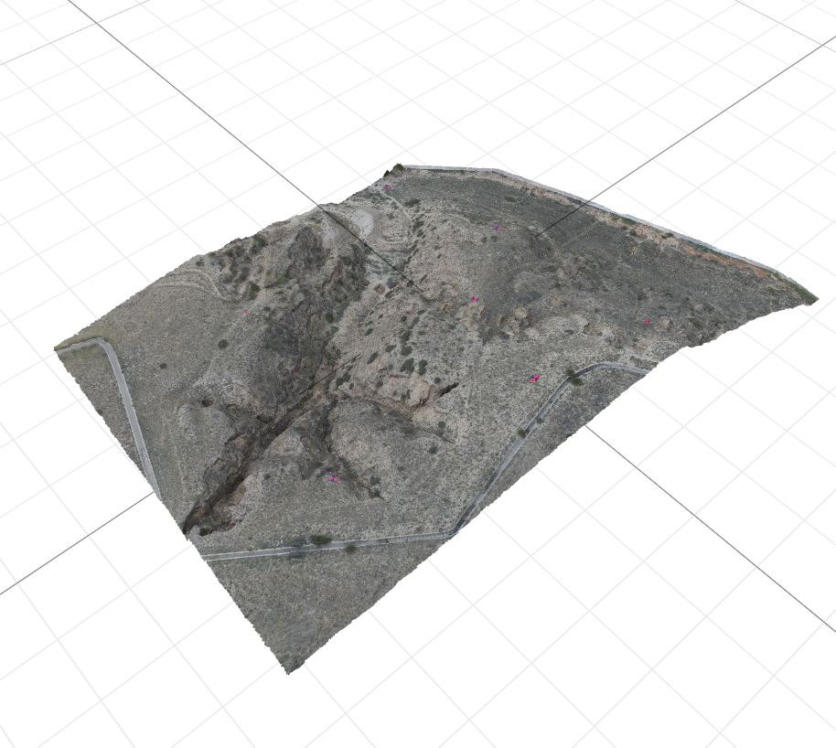

Welcome to the ARchaeology online library! By opening this site on your phone's browser, you can simply tab and view the AR models. Currently the models can only be viewed on iPhones, to successfully load and view the model, your need to have an iPhone 6 or newer model, and your iOS need to be 12 or above (preferably iOS13). we are working on a resolution for Android users, stay tuned.
Semispherical core with a 90 degree EPA
Center ridge Dibble core (flint)
PechIV site (low resolution)
PechIV site (high resolution)
SDG test square
SDG2 landscape (low resolution, 1:100)